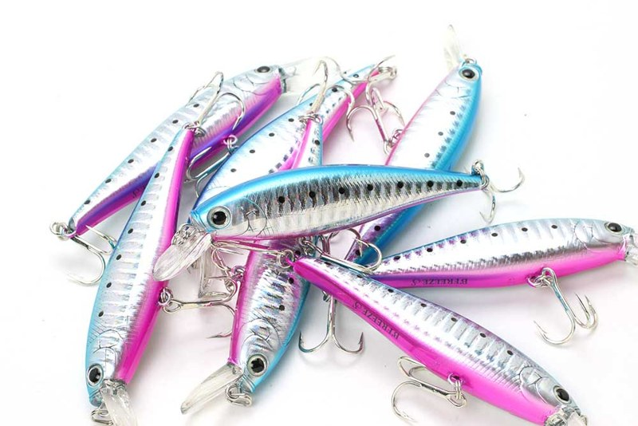
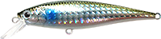

ビーフリーズ78S
（B'Freeze 78S）
ビーフリーズ78Sは、ラッキークラフトの定番ミノー「ビーフリーズ」のソルトウォーター版、78mmのシンキングモデルです。
固定重心で着水後すぐに泳ぎ出し、シーバスの側線を刺激するローリングアクションが最大の特徴。ただ巻きにもジャーキングにも対応する、港湾シーバスの「王道」のミノーです。

画像出典:ラッキークラフト公式HP
スペック
- メーカー
- ラッキークラフト（LUCKY CRAFT）
- タイプ
- シンキングミノー（固定重心）
- 全長
- 78mm
- 重さ
- 10.2g
- 潜行深度
- 1〜1.2m
- フック
- #6×2
- カラー
- 全24色（ほかにNamisuカラーなど）
- ターゲット
- シーバス
▼今すぐチェック

ビーフリーズ78Sの特徴
港湾シーバスの王道、固定重心のローリングミノー
-
固定重心で泳ぎ出しが速い
重心を固定しているので、着水してすぐに泳ぎはじめる。姿勢がきれいで、シーバスにスレにくい。
-
側線を刺激するローリングアクション
シーバスの側線部から本能を刺激するローリングアクション。デイゲームでも活躍する。
-
ボートシーバスにも投げやすいサイズ
78mmは、ボートシーバスでストラクチャーを狙う時に一番投げやすいサイズとされている。
ビーフリーズ78Sの使い方
基本は、魚に見切られないくらいのスローなただ巻きに、止めやジャークを織り交ぜてリアクションバイトを誘う使い方です。
ジャークを入れるとキビキビとダートするので、港湾の明暗や岸壁沿いでは、ただ巻きとジャークを使い分けて反応を探りましょう。
ビーフリーズ78Sの得意な状況
港湾部の岸壁や常夜灯まわり、橋脚などのストラクチャーまわりでシーバスを狙う時に出番です。
小さめのシルエットと素早い泳ぎ出しで、ストラクチャーぎりぎりを通しても食わせのタイミングを作りやすいのが強み。オカッパリでもボートでも使えます。
ワンポイント
岸壁際を狙う時は、壁と平行に投げて、着水したらすぐに巻きはじめるのがコツです。固定重心で泳ぎ出しが速いので、壁際の一番おいしい距離を最初から泳がせられます。
ビーフリーズ78（ソルト）の使い分け
| モデル | 重さ | 潜行深度 | こんな |
|---|---|---|---|
| 78S | 10.2g | 1〜1.2m | 基準の |
| 78LB-S | 10.5g | 1.5〜1.8m | ロングビルで、 |
| 78LB WT-S | 11.3g | — | 重心移動仕様で、 |
| 78DIVE-S | 11.0g | 2.5〜3m | 深い |
全長はすべて78mm。スペックはラッキークラフト公式HPの記載より。
人気カラー
ビーフリーズ78Sの人気カラーを紹介します。
定番のレッドヘッド。夜の港湾でシルエットをはっきり見せたい時に。
イワシを再現したメタリック系。デイゲームの1本目に。
マイワシがベイトの時に合わせたいナチュラルカラー。

レンズイナッ子イナッコ（ボラの幼魚）を食べている時に。
画像出典:ラッキークラフト公式HP
▼今すぐチェック
ビーフリーズ78Sに似ているルアー
-
 X-80SW
メガバス
詳細はこちら＞
X-80SW
メガバス
詳細はこちら＞
80mmのスローシンキングミノー。ローリングと脱軌道アクションで比べたい時に。
-
 シュリペン70
ブルーブルー
詳細はこちら＞
シュリペン70
ブルーブルー
詳細はこちら＞
もっと小さいベイトに合わせたいシンキングペンシル。
-
 カゲロウ100F
メガバス
詳細はこちら＞
カゲロウ100F
メガバス
詳細はこちら＞
フローティングで表層を引きたい時の小型ミノー。